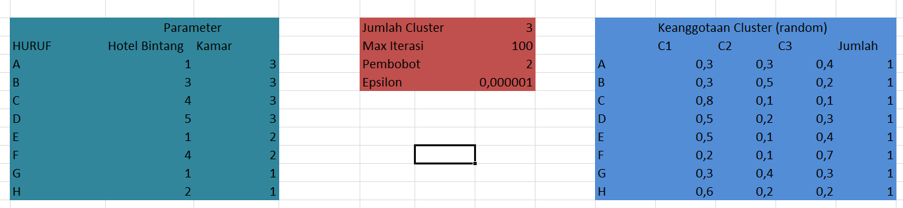
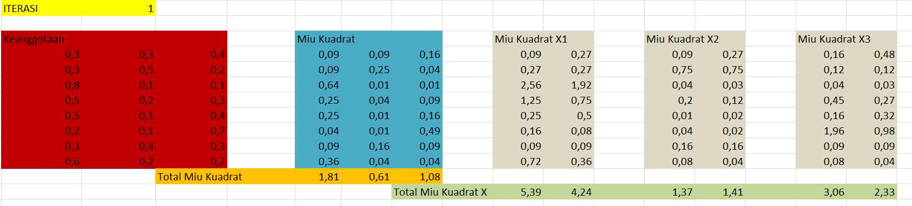
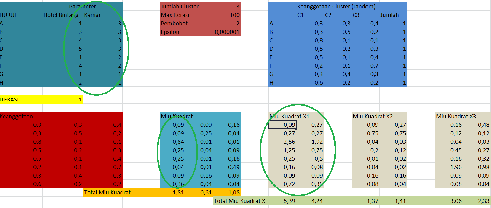
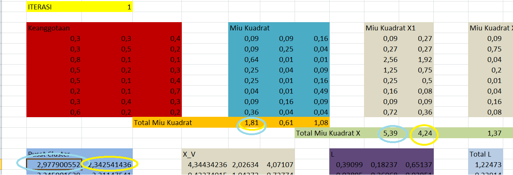

Fuzzy C-Means Clustering¶
Pengertian¶
Fuzzy Clustering adalah proses menentukan derajat keanggotaan, dan kemudian menggunakannya dengan memasukkannya kedalam elemen satu kelompok cluster atau lebih.
Fuzzy C-Means (FCM) adalah suatu teknik pengelompokan data yang keberadaan tiap-tiap data dalam suatu kelompok ditentukan oleh nilai atau derajat keanggotaan tertentu dan teknik ini pertama kali diperkenalkan oleh Jim Bezdek pada tahun 1981. Fuzzy C-Means menerapkan pengelompokan fuzzy, dimana setiap data dapat menjadi anggota dari beberapa cluster dengan derajat keanggotaan yang berbeda-beda pada setiap cluster. Fuzzy C-Means merupakan algoritma iteratif, yang menerapkan iterasi pada proses clustering data. Tujuan dari Fuzzy C-Means adalah untuk mendapatkan pusat cluster yang nantinya akan digunakan untuk mengetahui data yang masuk ke dalam sebuah cluster.
Teori Fuzzy C-Means¶
Dalam teori fuzzy, keanggotaan sebuah data tidak diberikan nilai secara tegas dengan nilai 1(menjadi anggota) dan nilai 0 (tidak menjadi anggota), melaikan dengan suatu nilai derajat keanggotaannya yang jangkauan nilainya 0 sampai 1. Nilai keanggotaan suatu data dalam sebuah himpunan menjadi 0 ketika sama sekali tidak menjadi anggota dan menjadi 1 ketika menjadi anggota secara penuh dalam suatu himpunan.Umumnya nilai keanggotaannya antara 0 sampai 1. semakin tinggi nilai keanggotaanya semakin tinggi derajat keanggotaanya dan semakin kecil maka semakin rendah derajat keanggotaanya. Kaitannya dengan K-means sebenarnya FCM merupakan versi fuzzy dan k-meansdengan beberapa modifikasi yang membedakan dengen K-Means.
Konsep dari Fuzzy C-Means pertama kali adalah menentukan pusat cluster, yang akan menandai lokasi rata-rata untuk tiap-tiap cluster. Pada kondisi awal, pusat cluster ini masih belum akurat. Tiap-tiap titik data memiliki derajat keanggotaan untuk tiap-tiap cluster. Dengan cara memperbaiki pusat cluster dan derajat keanggotaan tiap-tiap titik data secara berulang, maka akan dapat dilihat bahwa pusat cluster akan bergerak menuju lokasi yang tepat. Perulangan ini didasarkan pada minimasi fungsi obyektif yang menggambarkan jarak dari titik data yang diberikan kepusat cluster yang terbobot oleh derajat keanggotaan titik data tersebut. Output dari Fuzzy C-Means merupakan deretan usat cluster dan beberapa derajat keanggotaan untuk tiap-tiap titik data. Informasi ini dapat digunakan untuk membangun suatu fuzzy inference system. Kelebihan dari metode fuzzy C-means adalah sederhana, mudah diimplementasikan, memiliki kemampuan untuk mengelompokkan data yang besar, dan Running timenya linear O( linear O(NCT)
Hal ini akan memberikan informasi kesamaan dari setiap objek. Satu dari sekian banyaknya algoritma fuzzy clustering yang digunakan adalah algoritma fuzzy clustering c means. Vektor dari fuzzy clustering, V={v1, v2, v3,…, vc}, merupakan sebuah fungsi objektif yang di defenisikan dengan derajat keanggotaan dari data Xj dan pusat cluster Vj.
Algoritma fuzzy clustering c means membagi data yang tersedia dari setiap elemen data berhingga lalu memasukkannya kedalam bagian dari koleksi cluster yang dipengaruhi oleh beberapa kriteria yang diberikan. Berikan satu kumpulan data berhingga. X= {x1,…, xn } dan pusat data.

Di mana $μ_{ij}$ adalah tingkat keanggotaan $X_j$ dan pusat dari cluster adalah bagian dari matriks keanggotaan $[μ_{ij}]. d^2$ adalah akar dari jarak Euclidean dan m adalah parameter fuzzy yang rata-rata tingkat keburaman dari setiap data keanggotaan derajat tidak lebih besar dari 1,0.
Output dari Fuzzy C-Means adalah deretan cluster pusat dan beberapa derajat keanggotaan untuk setiap titik data. Informasi ini dapat digunakan untuk membangun sistem inferensi fuzzy.
Algoritma Fuzzy Clustering Means (FCM)¶
Fuzzy c-means (FCM) adalah metode pengelompokan yang memungkinkan satu bagian data menjadi milik dua atau lebih kelompok. Metode ini (dikembangkan oleh Dunn pada tahun 1973 dan ditingkatkan oleh Bezdek pada tahun 1981) sering digunakan dalam pengenalan pola. Ini didasarkan pada minimalisasi fungsi tujuan berikut: $$ \sum\limits_{j=1}^k \sum\limits_{x_i \in C_j} u_{ij}^m (x_i - \mu_j)^2 $$ Dimana :
$u_{i}j$ adalah sejauh mana observasi xi milik sebuah cluster $c_j$ $μ_j$ adalah pusat dari cluster j $u_{ij}$ adalah sejauh mana observasi xi milik sebuah cluster $c_j$ m adalah fuzzifier.
Algoritma Fuzzy Clustering Means (FCM)
Algoritma Fuzzy C-Means adalah sebagai berikut:


Implementasi Fuzzy C-Means Clustering Dengan Excel¶
Dengan menggunakan Excel
1) Dengan menentukan Jumlah Cluster serta pembobot (sebagai m) yang digunakan . Pada Contoh di bawah ini menggunakan 3 cluster dan 2 pembobot

2) Pada Keanggotaan Cluster secara random. 3 Cluster tersebut melakukan normalisasi dan ketika dijumlah ketiga cluster akan berjumlah = 1.
3) Menentukan MiuKuadrat, yaitu dengan meng-kuadrat kan semua clustering,tergantung pada bobot yang digunakan. Berikut pada contoh di bawah ini. Pada Miu Kuadrat ialah Meng pangkatkan 2 Cluster pada Cluster 1 fitur ke 1,Cluster 2 fitur ke 2 dan Cluster 3 fitur ke 3. Dan didapatkanlah semua total Miu Kuadrat

4) Menentukan Miu Kudrat X1,X2, dan X3 dengan cara. Dengan menng-kalikan Fitur Parameter Hotel Bintang dan Kamar dengan Miu Kuadrat pada Fitur ke 1. pada Fitur ke 1 0,09 dikali dengan Fitur Parameter dengan baris Huruf A 0,09x1=0,09 dan 0,09x3=0,27. Terus berlanjut ke Miu Kuadrat selanjutnya

5) Menentukan Pusat cluser dengan cara membagi Total Miu Kuadrat X yang di dapat Pada Total Miu Kuadrat X1 dibagi dengan Total Miu Kuadrat pada fitur ke 1. Berikut contohnya

Berikut File Excel yang bisa di download untuk metode Fuzzy C-Means secara Manual di Excel
https://docs.google.com/spreadsheets/d/e/2PACX-1vRNAimNvR40bCtQV9CmfF38oO-gb_JyJEBlygo_02GFR-ZZu_X6svd5QXlhM_CIPQ/pub?gid=469314514&single=true&output=csv
Implementasi Fuzzy C-Means dengan Code Python¶
Berikut Contoh Code python dengan metode Fuzzy C-means
from __future__ import division, print_function import numpy as np import matplotlib.pyplot as plt import skfuzzy as fuzz colors = ['b', 'orange', 'g', 'r', 'c', 'm', 'y', 'k', 'Brown', 'ForestGreen'] # Mendefinisikan 3 cluster center centers = [[4, 2], [1, 7], [5, 6]] sigmas = [[0.8, 0.3], [0.3, 0.5], [1.1, 0.7]] np.random.seed(42) xpts = np.zeros(1) ypts = np.zeros(1) labels = np.zeros(1) for i, ((xmu, ymu), (xsigma, ysigma)) in enumerate(zip(centers, sigmas)): xpts = np.hstack((xpts, np.random.standard_normal(200) * xsigma + xmu)) ypts = np.hstack((ypts, np.random.standard_normal(200) * ysigma + ymu)) labels = np.hstack((labels, np.ones(200) * i)) fig0, ax0 = plt.subplots() for label in range(3): ax0.plot(xpts[labels == label], ypts[labels == label], '.', color=colors[label]) ax0.set_title('Test data: 200 points x3 clusters.')
Hasil Running :

Di atas adalah data uji kami. Kami melihat tiga gumpalan yang berbeda. Namun, apa yang akan terjadi jika kita tidak tahu berapa banyak cluster yang harus kita harapkan? Mungkin jika data tidak begitu jelas mengelompok?
Mari kita coba mengelompokkan data kami beberapa kali, dengan antara 2 dan 9 cluster.
fig1, axes1 = plt.subplots(3, 3, figsize=(8, 8)) alldata = np.vstack((xpts, ypts)) fpcs = [] for ncenters, ax in enumerate(axes1.reshape(-1), 2): cntr, u, u0, d, jm, p, fpc = fuzz.cluster.cmeans( alldata, ncenters, 2, error=0.005, maxiter=1000, init=None) fpcs.append(fpc) cluster_membership = np.argmax(u, axis=0) for j in range(ncenters): ax.plot(xpts[cluster_membership == j], ypts[cluster_membership == j], '.', color=colors[j]) for pt in cntr: ax.plot(pt[0], pt[1], 'rs') ax.set_title('Centers = {0}; FPC = {1:.2f}'.format(ncenters, fpc)) ax.axis('off') fig1.tight_layout()
Hasil Running :

FPC didefinisikan pada rentang dari 0 hingga 1, dengan 1 yang terbaik. Ini adalah metrik yang memberi tahu kita seberapa bersih data kita dijelaskan oleh model tertentu. Selanjutnya kita akan mengelompokkan kumpulan data - yang kita tahu memiliki tiga kelompok - beberapa kali, dengan antara 2 dan 9 kelompok. Kami kemudian akan menunjukkan hasil pengelompokan, dan plot koefisien partisi fuzzy. Ketika FPC dimaksimalkan, data kami dideskripsikan dengan sangat baik.
fig2, ax2 = plt.subplots() ax2.plot(np.r_[2:11], fpcs) ax2.set_xlabel("Number of centers") ax2.set_ylabel("Fuzzy partition coefficient")

Seperti yang dapat kita lihat, jumlah pusat yang ideal adalah 3. Ini bukan berita untuk contoh buatan kami, tetapi menyediakan FPC bisa sangat berguna ketika struktur data Anda tidak jelas.
Perhatikan bahwa kami mulai dengan dua pusat, bukan satu; mengelompokkan data dengan hanya satu pusat cluster adalah solusi sepele dan akan dengan definisi mengembalikan FPC == 1.
Mengklasifikasikan Data Baru¶
Sekarang kita dapat mengelompokkan data, langkah selanjutnya sering memasukkan poin baru ke dalam model yang sudah ada. Ini dikenal sebagai prediksi. Ini membutuhkan model yang ada dan data baru untuk diklasifikasikan.
Membangun model¶
Kami tahu model terbaik kami memiliki tiga pusat cluster. Kami akan membangun kembali model 3-klaster untuk digunakan dalam prediksi, menghasilkan data seragam baru, dan memprediksi klaster mana yang dimiliki masing-masing titik data baru.
cntr, u_orig, _, _, _, _, _ = fuzz.cluster.cmeans( alldata, 3, 2, error=0.005, maxiter=1000) fig2, ax2 = plt.subplots() ax2.set_title('Trained model') for j in range(3): ax2.plot(alldata[0, u_orig.argmax(axis=0) == j], alldata[1, u_orig.argmax(axis=0) == j], 'o', label='series ' + str(j)) ax2.legend()
Hasil Running:

Akhirnya, kami menghasilkan data sampel yang seragam di bidang ini dan mengklasifikasikannya melalui prediksi kmeans, memasukkannya ke dalam model yang sudah ada sebelumnya.
newdata = np.random.uniform(0, 1, (1100, 2)) * 10 u, u0, d, jm, p, fpc = fuzz.cluster.cmeans_predict( newdata.T, cntr, 2, error=0.005, maxiter=1000) cluster_membership = np.argmax(u, axis=0) fig3, ax3 = plt.subplots() ax3.set_title('Random points classifed according to known centers') for j in range(3): ax3.plot(newdata[cluster_membership == j, 0], newdata[cluster_membership == j, 1], 'o', label='series ' + str(j)) ax3.legend() plt.show()
Hasil Running :